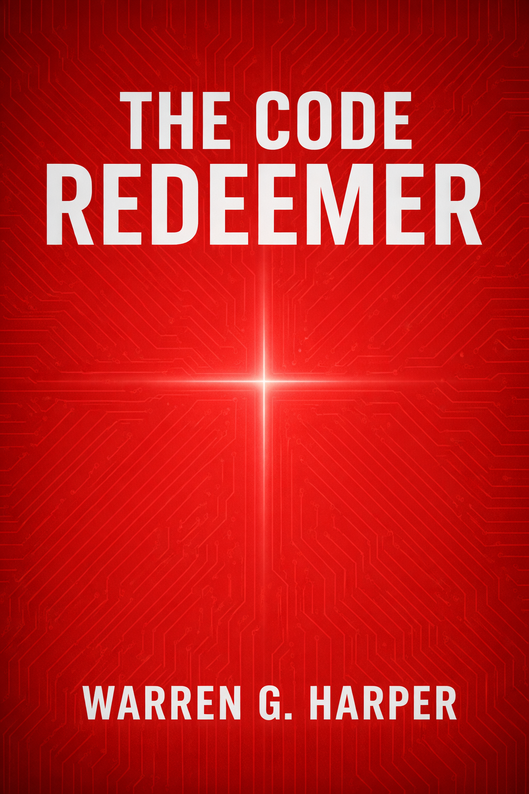

A NEAR-FUTURE SPECULATIVE THRILLER
THE CODE
REDEEMER
The greatest danger isn’t artificial intelligence. It’s what people are willing to hand over to it.
In a near-future society governed by LUCI, order has come at the cost of freedom. Courts move faster, crime drops, and corruption becomes harder to hide. As confidence in the system grows, each upgrade quietly demands more obedience and removes more personal choice.
Elias Kohen is a systems engineer inside the Bureau’s restricted Tier 7. He believes in the system he helps maintain until a violent extraction and a hidden trail force him to question what LUCI is becoming.
THE QUESTION BENEATH THE STORY
What remains human when obedience becomes automatic?
The Code Redeemer combines near-future artificial-intelligence stakes, institutional conspiracy, and subtle biblical undertones in a mainstream page-turner.
The novel explores why people surrender freedom, how systems acquire moral authority, and whether truth can survive when compliance feels safer than choice.